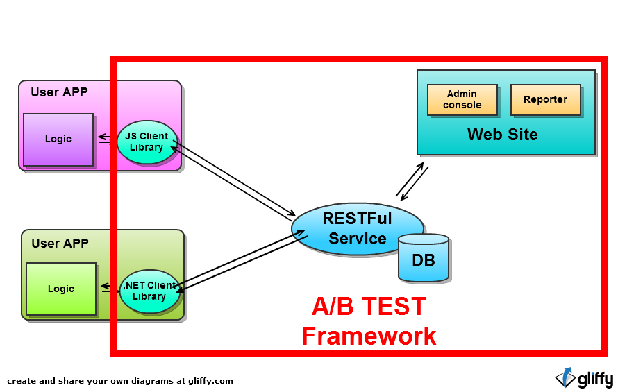

| /ab/experiment | GET POST | |
| /ab/experiment/{experimentId} | GET PUT | |
| /ab/experiment/{experimentId}/rule | GET POST | 只允许创建一次，不能修改，分配规则确定后不能修改 |
| /ab/experiment/{experimentId}/alternative | GET POST | |
| /ab/experiment/{experimentId}/alternative/{alternativeId} | GET PUT DELETE | |
| /ab/experiment/{experimentId}/alternative/{alternativeId}/ruleparameter | GET PUT | |
| /ab/experiment/{experimentId}/log | GET POST |
| alternativeId abTest(experimentId, userInfo) | 根据用户信息获取应该使用的指定的Experiment |
| void abLog(experimentId, userInfo, logContent) | 记录Experiment的日志 |
int alternativeId = abTest(...);
if(alternativeId = 1){
doSomething1();
}else if(alternativeId = 2){
doSomething2();
}else if(alternativeId = 3){
doSomething3();
}else{
doAsUsual();
}
registerBtn.click(function(){
abLog(....);
});